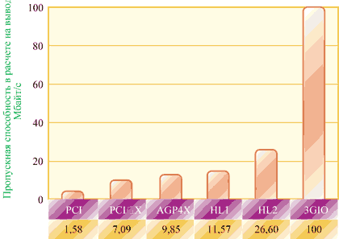

Андрей Борзенко
Эволюция PCI
Шина PCI (Peripheral Component Interconnect) - это уникальное явление на современном компьютерном рынке. В ее появлении важную роль сыграла корпорация Intel (http://www.intel.com). Разработка шины PCI началась весной 1991 г. как внутренний проект корпорации, перед специалистами которой стояла задача разработать недорогое решение, полностью реализующее возможности нового поколения микропроцессоров. До появления PCI в ПК чаще всего встречалась шина ISA и ее усовершенствованная разновидность - EISA. Но еще в далеком 1992 г. ограничения, накладываемые пропускной способностью этих шин, были совершенно очевидны. При взаимодействии устройства с процессором запрос на обслуживание проходил через расширительный мост, шину памяти, кэш и локальную шину процессора. Все это вело к значительным задержкам при обработке запроса и вводе-выводе. В соответствии же со спецификацией PCI каждое устройство напрямую имело доступ к локальной шине процессора и шине системной памяти через связующий их мост. Такое решение имело по крайней мере два преимущества. Во-первых, оно позволяло выполнять по шине несколько операций одновременно: например, процессор мог забирать данные из кэш-памяти моста, в то время как устройство обращалось к системной памяти. Во-вторых, новое решение обеспечивало независимость локальной шины от процессора.
Массово PCI стала применяться для Pentium-систем, но использовалась и с 486-ми процессорами. Для шины PCI предусмотрены тактовые частоты 33 и 66 МГц, а при 64-разрядной шине можно получить пропускную способность 533 Мбайт/с. На PCI определены два основных вида устройств - инициатор (задатчик), т. е. устройство, получившее от арбитра шины разрешение на ее захват, и устройство назначения (приемник), с которым инициатор выполняет цикл обмена данными. Данные и адресная информация передаются по одному и тому же пути, поэтому передача данных требует как минимум двух циклов шины: одного - для передачи адреса, другого - для доставки самих данных. Однако благодаря тому, что в режиме владения шиной поддерживается пакетная передача, отправитель может вслед за адресной информацией послать все данные сразу. Об объеме передаваемых данных отправитель и получатель договариваются в начале передачи. Пакетную передачу не может прервать никакое другое устройство, поскольку оно не находится в режиме владения шиной.
Автоконфигурирование устройств поддерживается средствами BIOS системной платы. Стандарт PCI определяет для каждого слота конфигурационное пространство размером до 256 восьмиразрядных регистров, не приписанных ни к пространству памяти, ни к пространству ввода-вывода. Доступ к ним осуществляется по специальным циклам шины Configuration Read и Configuration Write, которые вырабатываются контроллером при обращении процессора к регистрам контроллера шины PCI, расположенным в его пространстве ввода-вывода. В спецификации PCI 2.2 появились следующие новые возможности.
- Поддержка горячей замены PCI-устройств (названной в стандарте PCI Hot-Plug). Введение этой функции позволяет добавлять (удалять) PCI-платы, не выключая компьютер. Такая возможность особенно важна для серверных платформ.
- Система управления энергопотреблением для устройств на шине PCI. Позволяет управлять энергопотреблением как для внешних PCI плат, так и для встроенных на материнской плате устройств. Механизм управления подстроен под стандарт ACPI, чтобы облегчить управление со стороны операционной системы.
- Дополнены и переработаны требования к конструктивной реализации PCI-плат.
PCI представляет собой шину разделяемой архитектуры с распределением памяти; иными словами, память совместно используется процессором (хостом) и устройствами. Разделяемый подход имеет очевидные недостатки: например, какое-либо одно периферийное устройство может монополизировать шину, так что другие устройства не будут иметь к ней доступа. Кроме того, шина с распределением памяти затрудняет выявление и изолирование источника сбоя. С повышением тактовой частоты процессоров до 1 ГГц при ширине шины процессор - память в 64 разряда, с одной стороны, и с возрастанием пропускной способности локальной сети до 1 Гбит/с и появлением высокоскоростных периферийных устройств на базе Ultra3 SCSI и Fibre Channel - с другой, пропускной способности имеющихся реализаций PCI оказывается недостаточно.
| Рис. 1. Эволюция PCI.
|
Расширение PCI-X
В 1998 г. была предложена новая спецификация расширения шины PCI - PCI-X. Она опиралась на существующую технологию PCI, но за счет ряда усовершенствований протокола позволяла значительно увеличить производительность шины: при частоте 133 МГц и ширине 64 разряда ее максимальная пропускная способность составляет 1066 Мбайт/с.
PCI-X использует протокол типа "регистр-регистр", который предоставляет больше времени на стадию декодирования. Новая технология PCI-X позволяет устройствам стабильно работать на частотах 66, 100 и 133 МГц. Кроме увеличения тактовой частоты, повышение производительности достигается за счет таких усовершенствований, как межрегистровый протокол, атрибутивная фаза, поддержка разделенных транзакций, оптимизация состояний ожидания и оперирование блоками данных стандартного объема. Атрибутивная фаза использует 36-битовое поле, которое описывает транзакцию на шине более детально, чем традиционный протокол PCI. В частности, оно включает информацию об объеме и порядке транзакции, идентификаторе устройства-инициатора транзакции. Все вместе это позволяет снизить требования к порядку выполнения транзакций, применить более эффективные алгоритмы управления буфером и повысить степень утилизации шины и остальных системных ресурсов.
Суть механизма расщепленных транзакций заключается в следующем. В соответствии с протоколом PCI устройство, запросившее данные, определяет момент их готовности путем постоянного опроса источника, что по существу приостанавливает работу шины. Новый протокол устраняет фазу опроса. Согласно ему, устройство-инициатор посылает источнику данных только сигнал запроса, получая в ответ квитанцию. После этого связь между устройствами прекращается и регистр освобождается для обработки другой информации. Когда данные будут готовы, источник инициирует новую транзакцию и пошлет их запросившему устройству.
Отметим, что спецификация поддерживает до 256 шинных сегментов, каждый из которых инициализируется независимо от других. Основная ее особенность - обратная совместимость с существующими шинами, адаптерами, устройствами и драйверами спецификации PCI. Поэтому могут существовать как однородные системы, содержащие только адаптеры PCI-X, так и смешанные, включающие и адаптеры PCI. Следует отметить, что максимальная частота шины 133 МГц поддерживается лишь тогда, когда сегмент содержит всего один разъем. При двух разъемах она снижается до 100 МГц, а при четырех - до 66 МГц. В спецификации PCI-X 2.0 скорость обмена информацией увеличивается до 2-4 Мбайт/с. Блок-схема системы с шинами PCI и PCI-X приведена на рис. 2.
| Рис. 2. Система с шинами PCI и PCI-X.
|
Требования к подсистемам 3GIO
PCI-шина прекрасно служила на протяжении последних 10 лет и будет играть заметную роль еще какое-то время. Однако требования к процессорной шине продолжают расти - в плане как частоты, так и напряжения, и конца этому росту в обозримом будущем не предвидится. Вместе с показателями процессорной шины растет пропускная способность памяти. Ведь набор микросхем обычно имеет хабовую архитектуру (рис. 3), которая включает концентраторы памяти и подсистемы ввода-вывода. Причина такого разбиения в том, что шина памяти обычно изменяется вместе с приходом нового поколения процессоров. Не секрет, что одна из главных функций набора микросхем - служить неким буфером между быстро изменяющейся шиной памяти и практически не обновляемой шиной ввода-вывода.
 |
Рис. 3. Современный набор микросхем.
|
Тщательное исследование PCI-технологии передачи сигналов показало, что параллельная реализация шины близка к своему пределу производительности: в ней затруднено масштабирование вверх по частоте и вниз по напряжению, синхронизация передачи данных ограничена величиной расфазировки синхронизирующих импульсов, а правила маршрутизации импульсов находятся на пределе рентабельности технологии. Все попытки устранить эти ограничения и создать шину ввода-вывода с более широкой полосой пропускания ведут к росту стоимости, несоизмеримому с повышением производительности. Приложения зачастую создавались в расчете на промежуточные стандарты PCI, не предусмотренные конечной спецификацией, - варианты и расширения PCI можно найти в настольных, переносных, мобильных и встроенных системах.
Современные программные приложения чрезвычайно требовательны к оборудованию, особенно к подсистеме ввода-вывода. Обработка видео- и аудиопотоков на настольных и переносных машинах уже не в новинку, однако стандарты PCI 2.2 или PCI-X не предусматривают никакой базовой поддержки для таких критических по времени данных. Приложения, обеспечивающие видео по требованию или ретрансляцию аудиоданных, предъявляют к серверам определенные требования, связанные с обработкой данных в реальном времени. Многие коммуникационные приложения и встроенные системы управления на базе ПК также обрабатывают данные в реальном времени. Современные системы должны справляться со многими параллельными потоками данных, скорости передачи которых постоянно растут. Уже нельзя обрабатывать все данные одинаково - наиболее важные (например, потоковые данные) следует обрабатывать в первую очередь - ведь запоздавшая информация столь же бесполезна, как и ее отсутствие. Следует предусмотреть некую схему разметки данных, чтобы система ввода-вывода обслуживала их в соответствии с приоритетами.
Будущая архитектура ввода-вывода третьего поколения (3rd Generation Input Output, 3GIO) представляет собой универсальную архитектуру последовательного типа с малым количеством контактов, производительность которой будет ограничиваться исключительно технологическими особенностями соединений. Предполагается, что эта архитектура будет с равным успехом применяться в настольных и мобильных системах, серверах, коммуникационных устройствах и встроенных приложениях. Специалисты из Arapahoe Work Group (которая и занимается разработкой соответствующей спецификации) предварительно выработали определенные требования к межкомпонентным межсоединениям третьего поколения.
Поддержка множества рыночных сегментов и новых приложений. Унификация архитектуры ввода-вывода для настольных, переносных, серверных, коммуникационных, клиентских и встроенных устройств.
Низкая цена и массовое производство. Стоимость должна быть такой же или ниже, чем для систем на PCI.
Совместимая с PCI программная модель. Начальная загрузка существующих ОС без дополнительной модификации. Совместимая с PCI конфигурация и интерфейсы драйверов внешних устройств.
Производительность. Масштабируемость производительности путем изменения частоты и добавления дополнительных линий связи. Высокая пропускная способность в расчете на одну линию. Низкие непроизводительные издержки. Малое время ожидания.
Поддержка различных типов соединений. Соединения типа микросхема-микросхема, плата-плата через разъем, стыковочный узел и поддержка новых форм-факторов.
Дополнительные возможности. Поддержка различных типов данных. Управление питанием. Горячее подключение и замена. Целостность данных и обработка ошибок. Расширяемость. Базовые механизмы поддержки встроенных и коммуникационных приложений.
За рамками будущей спецификации разработчики оставили синхронную связь между процессорами, внутренние соединения в памяти и кабельные соединения в кластерах. Последние разработки в технологиях, призванных обеспечить высокоскоростные соединения типа точка-точка с минимальным количеством выводов на разъемах, демонстрируют новые возможности повышения пропускной способности.
Топология 3GIO подразумевает наличие ведущего моста (host bridge) и нескольких конечных точек (устройств ввода-вывода), как показано на рис. 4. Множество соединений типа точка-точка потребовали ввести в топологию системы новый элемент - коммутатор ввода-вывода. Он заменил собой многоабонентскую шину и используется для расширения шины ввода-вывода. Коммутатор также может поддерживать одноранговую связь между конечными точками, причем соответствующий трафик (если только для него не требуется взаимодействие с памятью) не попадает на ведущий мост. На рис. 4 коммутатор представлен как отдельный логический элемент, однако он может интегрироваться в ведущий мост.
| Рис. 4. Топология системы с коммутатором.
|
Подключения с небольшим числом управляющих импульсов и соединениями типа точка-точка можно создавать с помощью соединителей и кабелей. Механическая конструкция 3GIO обеспечивает новые способы деления системы на блоки.
На рис. 5 показана стандартная система для серверов и рабочих станций на базе архитектуры 3GIO. Множественные параллельные шины заменены на 3GIO-связи с одним или более путями (линиями). Каждую связь в отдельности можно масштабировать, добавляя дополнительные линии, что позволяет обеспечить большую пропускную способность там, где требуется (например, для графических приложений или на серверных мостах между шинами 3GIO - PCI-X).
| Рис. 5. Сервер на базе 3GIO.
|
Коммутатор 3GIO обеспечивает разветвление и позволяет добавить дополнительные высокопроизводительные встраиваемые устройства ввода-вывода. По мнению экспертов, PCI будет присутствовать во многих системах для поддержки нынешних приложений, которым достаточно более низкой пропускной способности, но только до того момента, когда новые требования, например перспективный форм-фактор, не заставят полностью перейти на 3GIO.
Серверные системы предъявляют высокие требования к производительности операций ввода-вывода и возможностям подключения, в том числе высокопроизводительных соединений 3GIO с шиной PCI-X, а также структур Gigabit Ethernet и InfiniBand. Из рис. 4 видно, как преимущества 3GIO, доступные для настольных систем, используются на серверах. Комбинация 3GIO для "внутренних" операций ввода-вывода и структуры InfiniBand для "внешнего" ввода-вывода и внутрикластерных соединений, позволяет на серверах перейти от модели "параллельной общей шины" к высокоскоростным последовательном межкомпонентным соединениям.
Набор коммутаторов в сетевых платформах может применяться для улучшения связи и качества обслуживания QoS (Quality of Service) с дифференциацией различных типов трафика. Кроме того, дополнительные возможности предоставляет создание модульной системы ввода-вывода на основе множества 3GIO-соединений.
Архитектура 3GIO
Архитектура 3GIO состоит из нескольких уровней (рис. 6). Поддерживается совместимость с моделью адресации в PCI, чтобы обеспечить нормальную работу существующих приложений и драйверов. Процедуры конфигурирования в 3GIO используют стандартные механизмы Plug-and-Play, определенные в PCI. Созданные на программном уровне запросы на чтение и запись транспортируются уровнем транзакций на устройства ввода-вывода, работающие по протоколу, который поддерживает пакеты и транзакции. На канальном уровне к пакетам добавляются порядковые номера и циклический код коррекции ошибок (CRC), что обеспечивает высокую надежность передачи данных. Базовый физический уровень состоит из двойного симплексного канала, который реализован в виде принимающей и получающей пар проводников. Исходная скорость передачи 2,5 Гбит/с в каждом направлении обеспечивает канал связи со скоростью передачи данных 200 Мбайт/с, что в два раза выше, чем у стандартной шины PCI.
| Рис. 6. В архитектуре 3GIO выделяется несколько уровней.
|
Физический уровень
Стандартное 3GIO-соединение состоит из двух низковольтных, раздельно управляемых сигнальных пар: передающей и принимающей (рис. 7). Для достижения чрезвычайно высоких скоростей передачи данных применяется управляющий сигнал передачи данных со схемой кодировки 8b/10b. Базовая частота (скорость передачи) - 2,5 Гбит/с в каждом направлении; как ожидается, с развитием кремниевых технологий она возрастет до 10 Гбит/с (теоретический максимум для передачи сигналов с использованием медного носителя). Физический уровень пересылает пакеты между транспортными уровнями двух исполнительных устройств 3GIO.
| Рис. 7. 3GIO-соединение.
|
Пропускная способность 3GIO легко линейно масштабируется путем добавления сигнальных пар, обеспечивающих дополнительные линии. Физический уровень поддерживает линии следующих кратностей: x1, x2, x4, x8, x12, x16 и x32, при этом байты данных распределяются по ним определенным образом. Поскольку информация передается по линии с кодированием, то распределение и сборка байтов данных выполняются "прозрачно" для других уровней.
В процессе инициализации каждое 3GIO-соединение устанавливается после согласования ширины связи и частоты использования между двумя исполнительными устройствами на концах соединения. При этом не требуется никаких встроенных программ или кода операционной системы.
Поддержка будущих требований к производительности в 3GIO обеспечивается за счет возможности повышения быстродействия и передовым методам кодирования. Эти требования (к скоростям, методам кодирования или носителям) окажут влияние лишь на физический уровень.
Канальный уровень
Основная задача канального уровня - гарантировать надежную доставку пакетов по 3GIO-соединениям. Чтобы обеспечить целостность данных, на канальном уровне к пакетам добавляются порядковые номера и код коррекции ошибок. Большинство пакетов создается на уровне транзакций (о нем чуть ниже). Основанный на разрешениях протокол управления потоком данных гарантирует, что пакеты передаются лишь при заведомой готовности буфера на принимающей стороне. Такой механизм устраняет повторения пакетов, а значит, и избыточную загрузку линии передачи. Канальный уровень автоматически повторяет передачу испорченных пакетов.
Уровень транзакций
Уровень транзакций принимает от программного уровня запросы на чтение и запись и создает пакеты запроса для передачи по канальному уровню. Все запросы реализованы в виде расщепленных транзакций, поэтому при пересылке некоторых пакетов запроса требуется получение пакета ответа. Уровень транзакций также отвечает за прием пакетов ответа от канального уровня и сопоставление их исходным запросам программного уровня. Каждый пакет оснащен уникальным идентификатором, что позволяет направлять ответные пакеты стороне, создавшей пакет запроса. В формате пакета предусмотрена поддержка стандартной 32-разрядной и расширенной 64-разрядной адресации памяти. У пакетов также имеются атрибуты, например "защищенный" (no-snoop), "низкий приоритет" (relaxed-ordering) и "приоритетный" (priority), которые служат для оптимизации маршрутизации пакетов через подсистему ввода-вывода.
Уровень транзакций поддерживает четыре адресных пространства: три пространства PCI (память, ввод-вывод и конфигурирование) и пространство сообщений (Message Space). Как известно, в спецификации PCI 2.2 определен дополнительный метод передачи прерываний MSI (Message Signaled Interrupt - "прерывание с сообщением"), в котором вместо аппаратного сигнала задействовалась операция записи в память особой информации. В спецификации 3GIO подход MSI применяется как основной метод обработки прерываний, а пространство сообщений используется для обработки всех служебных сигналов (например, прерываний, запросов управления питанием, сбросов и т. д.) как основных сообщений. Другие возможности стандарта PCI 2.2, такие как подтверждение (квитирование) прерываний, также реализованы в виде основных сообщений. Заметим, что сообщения 3GIO следует рассматривать как "виртуальные" коммуникационные линии, поскольку их задача - устранить массу существующих в настоящее время служебных сигналов.
Программные уровни
Программная совместимость исключительно важна для межкомпонентных соединений ввода-вывода третьего поколения. Существуют две ее стороны: совместимость при инициализации (или перечислении) и совместимость во время выполнения. PCI обладает надежной моделью инициализации, позволяющей операционной системе сначала обнаружить все установленные аппаратные устройства, а затем распределить между ними системные ресурсы, такие как память, пространство ввода-вывода и прерывания, для создания оптимальной системной среды. Конфигурационное пространство PCI и программируемость устройств ввода-вывода - базовые понятия, оставшиеся неизменными в архитектуре 3GIO; фактически все ОС будут загружаться в 3GIO-системе без каких-либо дополнительных модификаций.
Имеющаяся в PCI программная модель сохранена в архитектуре 3GIO, что позволит без проблем пользоваться существующим ПО. А новым программам будут доступны новые возможности.
Механическая конструкция
Небольшое количество линий в 3GIO-соединениях позволит обеспечить эволюционный подход к конструкции подсистемы ввода-вывода и революционный подход к делению системы на модули. Начальные реализации плат-расширений на базе 3GIO будут сосуществовать с действующими платами с форм-фактором PCI (как полноразмерными, так и с высотой в половину стандартной). Существуют две возможности поддержки механически совместимого с PCI подключения: например, для низкопроизводительных подключений с одной или двумя линиями можно использовать стандартный PCI-разъем, а для высокопроизводительных подключений к графической плате (четыре линии) применить новый соединитель, размещенный рядом с существующим PCI-разъемом, там, где раньше располагался ISA-разъем. Система будущего будет состоять из вычислительного "кирпича", полностью отделенного от компонентов пользовательского интерфейса ввода-вывода.
Производительность
Дифференциальные 3GIO-подключения по схеме точка-точка обеспечивают высокоскоростную связь между компонентами с минимумом управляющих сигналов. В 3GIO из пространства сообщений изъяты все существовавшие ранее служебные сигналы, что позволило сократить число сигналов до минимума. На рис. 8 показаны результаты сравнительного изменения пропускной способности в расчете на вывод для различных шин. (Пропускная способность на вывод рассчитана как пиковая пропускная способность шины, деленная на общее количество выводов в компоненте, которое равно сумме числа выводов для передачи данных, адресных, управляющих, питающих выводов и заземления.)
|  |
| Рис. 8. Сравнение пропускной способности различных шин.
|
Достигаемая благодаря архитектуре 3GIO скорость 100 Мбайт/с позволит обеспечить самую низкую стоимость изготовления при удовлетворении практически любых требований по пропускной способности.
Рабочая группа Arapahoe, которая в настоящее время разрабатывает спецификацию 3GIO, сотрудничает с отраслевой группой PCI-SIG (PCI Special Interest Group), стремясь к тому, чтобы изделия на основе 3GIO появились во второй половине 2003 г. Однако, как показывает история индустрии, путь к окончательной спецификации может оказаться довольно тернистым.